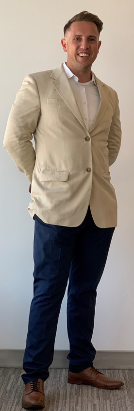

Certification
Education
Joey Bishop - Certified Cloud Cybersecurity Consultant

Career Details
Aug 2018 | Oracle Corporation
Field Customer Success Manager
-
Awakened $10 million+ in dormant and unrecognized revenue B2B including Accenture, Apple, Halliburton and Sony with migrations of over 10 petabytes of data from AWS.
-
Impact value over $30,000 of volunteer and donation activity in 2018 as Site Coordinator and Operations Manager for the Military/Veteran Employee Resource Group.
-
Directly influenced the competency of over 400 trainees in 5 global locations, locally enabling Oracle’s Santa Monica Hub to lead the organization in IaaS/PaaS certifications.
Jan 2016 | Microsoft Corporation
Technical Solutions Professional
- Consistently the highest revenue performer for SMB among 30+ peers for 2017-2018, covering use cases from Enterprise Apps to ETL 3.0.
-
Circle of Excellence Gold Club Attainment Winner & SME Speaker at Microsoft Ready & Ignite.
-
Ignite & Impact Honors: Company-wide awards for team building and onboarding efforts. Massive cultural impact and site-wide coordinator for Military/Veteran ERG, Fargo Campus.
Apr 2008 | United States Marine Corps
Logistics Program Manager
- Consult to top decision-makers and deliver cost-cutting and approved fiscal security plans to save the detachment over $11 million per year.
- Lead teams of 90+ individuals to deliver, secure and recover sensitive items with 100 per cent accountability, leading to the successful qualification of over 10,000 trainees. Saved the Marine Corps over $11 million per year.
- Esteemed award for the forethought and resourcefulness to rotate ammunition proactively, credited with the protection of 3000 trainees per week.